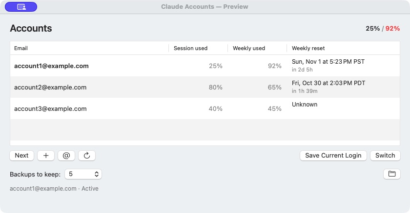

Know which tank is empty.
Session used. Weekly used. When the week resets. Right there in your menu bar and account list. Percentages mean used, because words should mean things.
A small Mac app for a very specific predicament.
Several accounts. One train of thought.
Less logging out. More getting on with it.
Native macOS · Your accounts · Your call

Actual app. Example accounts. No elaborate dashboard cosplay.
Your brilliant idea did not run out.
Your account did.
Here's the whole operation
You already have the accounts. This keeps the administrative interpretive dance to a minimum.
Session used. Weekly used. When the week resets. Right there in your menu bar and account list. Percentages mean used, because words should mean things.
Switch saved logins and carry your local Claude Code conversations forward. No ceremonial logout-login-log-out-again shuffle.
A red number is not a command. Nothing switches behind your back at 100%. When you're ready, choose an account or let Next choose an eligible one.
Deliberate, not dramatic
Let active agents finish or stop them yourself. Switching closes Claude; it's not an invisible hot-swap.
The app asks Claude to quit gracefully, backs up session changes, and activates the saved profile.
Your selected login is ready. Reopen the local Code session you were working on and continue.
First time with an account? Sign in through Claude itself. We do not need another password box in this world.
The load-bearing fine print
We like tiny utilities. We also like telling you what they actually do.
No. It switches between accounts you already have. Each account keeps its own subscription, limits, and service terms. There is no limit bypass hiding under a tiny hat.
Local Claude Code conversations and their workspace state are the focus. Cloud Chat and Cowork history, cloud artifacts, sidebar groups, and scheduled tasks stay with their original account. This is not a whole-account migration tool.
No. The direct edition keeps large local session and runtime directories in stable shared locations. Switching rotates saved profiles and synchronizes account-specific session metadata. Backups keep the last five by default, with a configurable limit.
Optional live usage checks need access to Claude's encrypted login cookies. macOS may ask for your login Keychain password, entered only in its own dialog. The app explains this first. Always Allow remembers permission; Allow Once can mean more prompts.
Those cookies are full login credentials, not usage-only tokens. They stay in memory while being used and are sent only to Claude. Background checks never trigger password prompts.
No. This is an independent utility from Synesthetic Systems, unaffiliated with Anthropic. Claude is Anthropic's product. The switcher relies on undocumented local storage and web endpoints, so upstream changes can break things.
The working app is the direct edition. A more limited, sandboxed edition is being investigated; it is not approved for or available on the Mac App Store. The editions will be described openly, not disguised as one another.
The app exists. The public release is still getting its shoes on.
No download yet, and no mysterious email list to join.
macOS 13 or later · Public release and final name pending